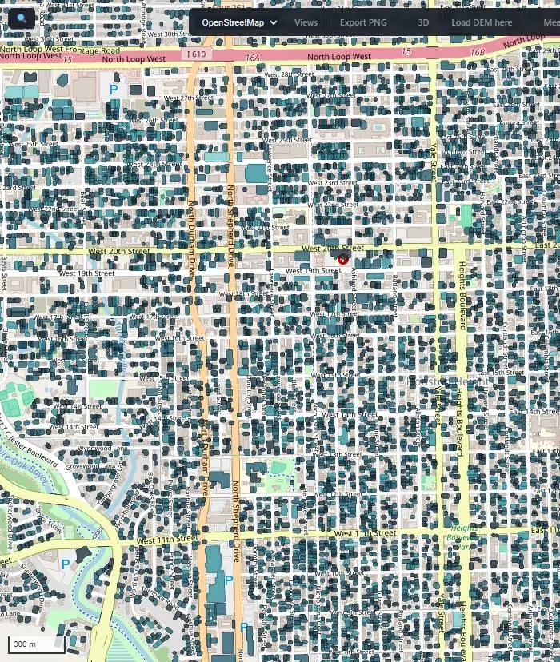
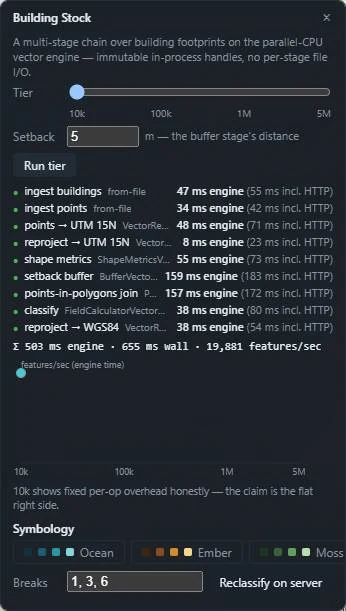
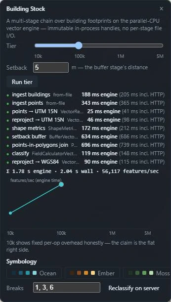
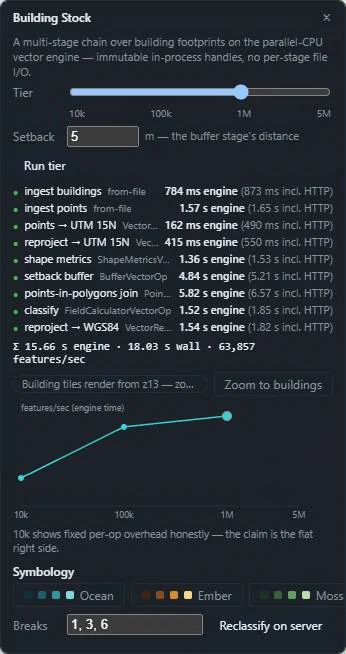
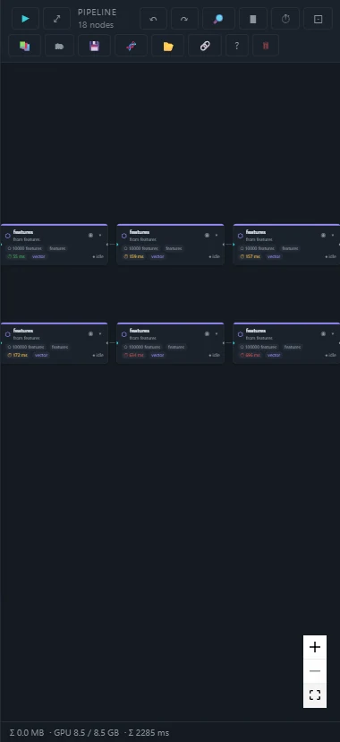
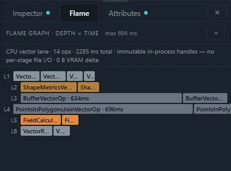
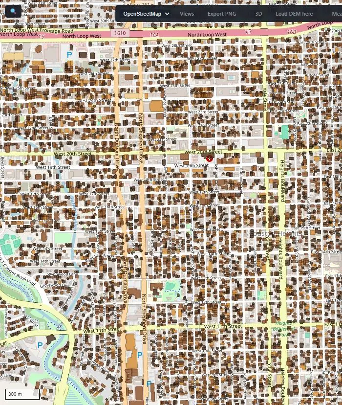
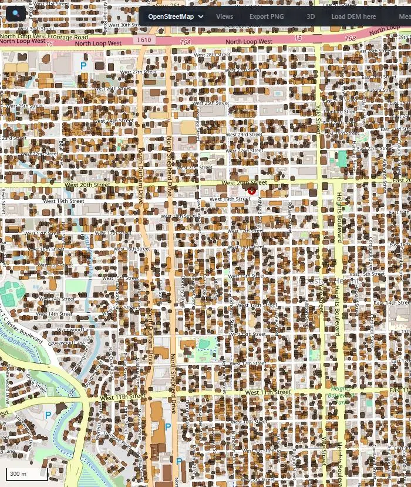
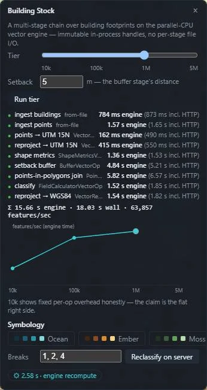
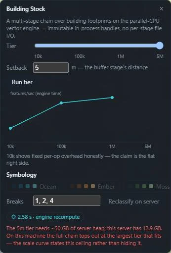

Seven vector operations over real building footprints — and the work mix barely moves across two orders of magnitude.
Real Microsoft building footprints for Houston, run through a seven-operation chain on the ForgeGIS™ parallel-CPU vector engine — reproject, shape metrics, setback buffer, points-in-polygons join, classify, reproject back — entirely through immutable in-process handles, with no per-stage file I/O. Every number on this page was read from a server-side timing path, never from pixels.

Seven operations, run identically at every tier. Two file ingests bracket it and are disclosed separately — they are not counted as engine time.
Microsoft US Building Footprints for Texas, clipped to nested bounding boxes around Houston at 10,000 / 100,000 / 1,000,000 features. Stored in EPSG:4326; the chain reprojects to UTM 15N so that buffers and areas are in honest metres, then back again.
Points to UTM, reproject to UTM, shape metrics, a 5 m setback buffer, a points-in-polygons join, classify, reproject to WGS84. Each stage hands the next an immutable in-process handle; nothing is written to disk between operations.
Engine time is the per-operation elapsed time recorded server-side around each call, with one warmup and three measured runs, mean reported. Wall time including HTTP is kept beside it and never blended in. Features/sec is simply features divided by engine total.
The official numbers come from a headless run — no server and no HTTP in the loop. The same chain through the live panel is shown alongside it, dimmed, carrying session overhead by design, so the gap between the two is on the record rather than hidden.
Each tier also runs interactively through all nine stages. Every row shows the split this study stands on: engine milliseconds in bold, wall time including HTTP dimmed beside it, never blended.




Between every pair of stages the result stays in process as an immutable handle. Nothing is serialised, nothing is written to disk, and nothing is re-read. That is the whole reason the per-feature cost stays flat as N grows — there is no per-stage I/O term to grow with it.
The CPU lane accounts for the full run and reports zero bytes of video memory moved. This chain never touches the GPU; the throughput above is what the parallel-CPU vector surface does on its own.

Past 150,000 features the map renders through a vector-tile route. Restyling and reclassifying look similar on screen and are completely different work, so the page separates them by request count rather than by adjective.

The restyle is free. Same tiles, same classes, repainted in the client — the request log recorded zero API calls across the click. The buildings did not change; only the paint did.

Changing the class breaks recomputes the class code for every feature in the engine, mints a new immutable handle, and the map refetches tiles under a new URL. It took 2.58 s and it is labelled as engine work, because that is what it is.
Because the new result is a new handle with a new tile URL, the cache flush is structural rather than a policy someone has to remember. There is no path by which the map can show tiles from a superseded classification.

The 5M tier is memory-bound on this machine, and the system says so before reading a single byte. The 1M tier peaked at 7.9 GB of heap with intermediates freed as they were consumed; five layers of five million features do not fit in 12.9 GB. So the curve tops out at 1M and states the arithmetic instead of quietly ending. A scale curve that hides where it stops is a marketing curve.
SKIPPED tier 5m: predicted heap 45.4 GB >= 80% of max 12.9 GB (1M peak 7.9 GB). Pass --force to try anyway.
Two refusals guard two different quantities. The headless gate’s 45.4 GB is a measured extrapolation from this run’s 1M peak; the panel’s ~50 GB is a configured refusal floor set above the worst extrapolation seen across runs. The gate measures; the panel guards. A 10M tier was dropped at design time for the same reason.

Every claim above traces to one of these.
| Item | Detail |
|---|---|
| Buildings | Microsoft US Building Footprints, Texas — © Microsoft, released under the Open Database License (ODbL) 1.0. Multi-part geometries exploded at preparation; tiers are an exact first-N cap in file order. |
| Incident points | Synthetic. Seeded, two per building at every tier — centroid plus roughly 60 m of jitter. They exist to exercise the join, not to describe Houston. |
| Projection | Tiers stored in EPSG:4326; the chain reprojects to UTM 15N so buffers and areas are in metres, then back to WGS84 for display. |
| Engine time | Per-operation elapsed time measured server-side around each call. Headless: one warmup, three measured, mean reported. Wall time including HTTP is reported separately and never blended in. |
| File ingest | Excluded from engine totals and reported on its own row. Features/sec is features divided by engine total. |
| Hardware | Intel Core 7 240H, 16 logical cores, 15.7 GB RAM. Server heap -Xmx12g (12.9 GB measured maximum), 15 worker threads. Results are specific to this stack. |
| Known limit | The saved pipeline for this chain is a two-source graph, and the batch lane currently binds a single source — so the chain runs interactively but not in batch. That is the batch lane’s limitation, stated rather than worked around. |
No comparison to any external system is made or implied. The curve compares the engine only to itself across N.
The per-operation timings behind every figure here, and the harness that produced them, are available to evaluators under NDA. Seaglass Foundry™ is happy to walk through the methodology or run the chain against a footprint set of your choosing.
rich@seaglassfoundry.com